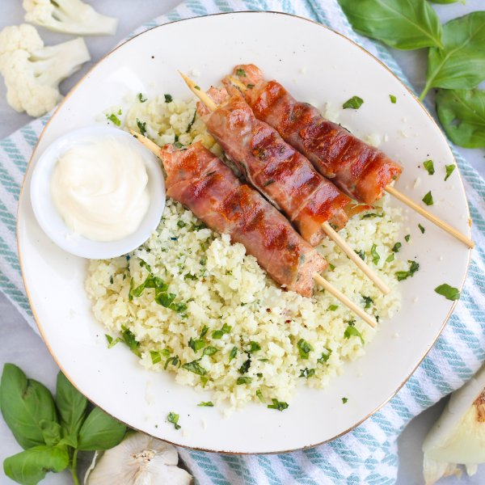

Prosciutto Wrapped Basil-Salmon Kabobs with Cauliflower Rice

Total Time
35 min
Nutrition (Per Serving)
626.4 kcalCalories
51 gProtein
12.4 gCarbs
43 gFat
Full nutrition table
| Calories | 626.4 kcal |
| Total fat | 43 g |
| Saturated fat | 8.2 g |
| Trans fat | 0 g |
| Cholesterol | 124.9 mg |
| Sodium | 1012.4 mg |
| Carbohydrates | 12.4 g |
| Fiber | 3.7 g |
| Sugars | 5.5 g |
| Protein | 51 g |
| Potassium | 1246.9 mg |
| Calcium | 129.4 mg |
| Iron | 2.8 mg |
| Vitamin A | 232.6 IU |
| Vitamin C | 77.6 mg |
| Vitamin D | 614.1 IU |
Cookware
Ingredients
- 1 medium headcauliflower
- 2 small pkgsfresh basil
- 2 clovesgarlic
- 12 slicesprosciutto
- 1 ½ lbsalmon fillet
- 1 mediumyellow onion
- avocado oil mayonnaise
- black pepper
- extra virgin olive oil
- salt
Steps
- If using wooden skewers, place 12-16 skewers in a shallow dish of water to soak until you are ready to use them.
- Peel and small dice onion. Peel and mince garlic.1 medium yellow onion
2 cloves garlic - Preheat a large skillet over medium heat.
- When the skillet is hot, add oil and swirl to coat the bottom. Add onion and garlic; cook, stirring often, until it begins to soften, 4-5 minutes.2 tsp extra virgin olive oil
- Meanwhile, wash and dry the cauliflower. Cut the cauliflower head into quarters, then trim off and discard the leaves and thick stem. Using a box grater or food processor, coarsely grate the cauliflower.1 medium head cauliflower
- Add cauliflower and salt to the skillet. Continue to cook, stirring often, until cauliflower is lightly golden and cooked through, 6-8 minutes.1 tsp salt
- Meanwhile, wash and dry the basil. Pick basil leaves off the stems, roll up crosswise, and mince. Place half of the basil in a medium bowl along with oil, salt, and pepper; stir to combine the marinade. (Reserve remaining basil for the cauliflower rice.)2 small pkgs fresh basil
2 tbsp extra virgin olive oil
½ tsp salt
½ tsp black pepper - If using salmon with skin, place the fillets, skin-side down, on a cutting board. Holding the tail end firmly, use a knife to cut between the flesh and skin; continue to cut through the length of the fillet (take care not to cut through the skin); discard the skin. If you don’t have a tail end, start at one corner of the fillet and work your way in until the knife is between the skin and flesh.1 ½ lb salmon fillet
- Cut the salmon crosswise into 1-inch strips and transfer to the bowl with the marinade. Turn to coat.
- Thread one strip of salmon onto each skewer; wrap a piece of prosciutto around each salmon skewer and place on a plate. Alternatively, you can cook the salmon directly on the grill pan without using skewers.12 slices prosciutto
- Preheat a grill pan, outdoor grill, or large skillet over medium-high heat.
- Once the grill pan is hot, coat with oil. Working in batches if necessary, place kabobs on the grill and cook, rotating every 1½-2 minutes, until salmon is opaque and cooked through, 6-8 minutes.2 tbsp extra virgin olive oil
- Once the cauliflower rice is done, remove from heat and stir in the reserved basil.
- To serve, divide cauliflower rice and kabobs between plates. Serve mayonnaise on the side for dipping and enjoy!¼ cup avocado oil mayonnaise